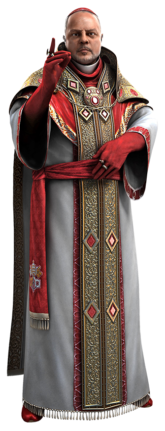
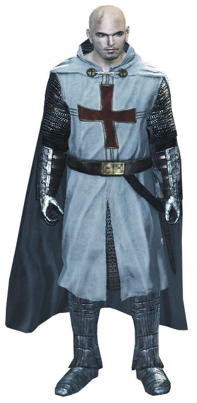
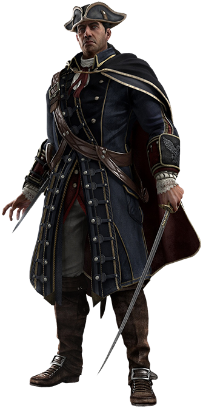

Origen de la Orden
Los orígenes de la Orden Templaria siguen siendo un misterio; se cree que los Templarios han existido desde los albores de la humanidad, o al menos desde que la humanidad reclamó su libertad de la Primera Civilización. Algún tiempo después de la catástrofe de Toba en el 75000 AEC, Caín, el hijo de Adán y Eva, asesinó a su hermano Abel para adquirir un Fragmento del Edén. Por su crimen, Cain fue marcado con una cruz roja. Caín pronto reunió a un colectivo de seguidores llamados los Hijos de Caín que defendieron sus ideales y llamaron a la cruz roja la Marca de Caín
- Edad Antigua: Algunos de los primeros precursores conocidos de los Caballeros Templarios se remontan al Antiguo Reino de Egipto, cuando el faraón Semenejkara fundó la Orden de los Antiguos, una organización que luego se transformaría en la Orden Templaria.
- Edad Media: Alrededor del siglo VI, los precursores de los Caballeros Templarios estuvieron activos en la Inglaterra medieval. En particular, en un momento fueron liderados por el legendario Rey Arturo, cuyos Caballeros de la Mesa Redonda buscaron en particular obtener el Santo Grial. Arturo en algún momento adquirió la posesión de una de las Espadas del Edén, sacándola de una piedra. La Espada se hizo conocida como el arma de excalibur. Finalmente, Arturo fue traicionado por su esposa, su mejor amigo y su hijo, muriendo en la desilusión
- Renacimiento: En 1476, el cardenal Rodrigo Borgia se convirtió en Gran Maestro de los Templarios italianos. Sin embargo, bajo su dirección, los Templarios perdieron de vista su verdadero propósito de paz, en lugar de eso, tomaron el control de Italia por un deseo de poder y codicia; los Templarios llegarían más tarde a referirse a esta época como la "Edad Oscura de la Orden". Con la supervisión de Rodrigo, los Templarios orquestaron varias conspiraciones para desmantelar el poder de las ciudades estado italianas, la primera de las cuales fue el asesinato exitoso del duque Galeazzo Maria Sforza de Milán el 26 de diciembre de 1476, seguida de la ejecución del Asesino Giovanni Auditore da Firenze y sus hijos Federico y Petruccio en Florencia tres días después.
- Era del Imperialismo: En 1692, los Templarios habían descubierto la noticia de que en las colonias americanas algunas muchachas de la ciudad puritana de Salem exhibían un comportamiento extraño. Tras la investigación, los Templarios creyeron que sus aflicciones eran causadas por un Fragmento del Edén. Para controlar a los ciudadanos puritanos de la ciudad, los Templarios William Stoughton y Samuel Parris comenzaron los juicios de brujas de Salem para encontrar pistas que conducieran a la ubicación del artefacto. Los Templarios encarcelaron a las niñas y niños que creían que podrían conducirlos a los Fragmentos del Edén, aunque finalmente se enfrentaron a la oposición de una miembro local de la Hermandad Asesina, Jennifer Querry, y al Asesino británico Thomas Stoddard. Para detener su interferencia, los Templarios reunieron a la gente del pueblo contra los Asesinos, alegando que eran los sirvientes del Diablo.
- Inicio de la Edad Contemporánea: En 1861, estalló una guerra civil en Estados Unidos. La Hermandad estadounidense apoyaba a la Unión de Abraham Lincoln, mientras que los Templarios apoyaron a La Confederación. Con la intención de ganar la guerra, el Mentor en Washington encargó a Varius robar la Daga de Edén del Club Azteca y hacerle entrega de ella al General Ulysses S. Grant, considerado por el Mentor como la mejor esperanza de la Union para ganar la guerra.
- Actualidad: En la década de 1730, el Gran Maestro Reginald Birch de los Templarios británicos, decidió preocuparse por encontrar artefactos de la Primera Civilización en todo el mundo. Al hacerlo, orquestó el asesinato de Edward Kenway para recuperar su diario, del cual se enteró del Gran Templo, ubicado en el Nuevo Mundo. También tomó bajo su ala a Haytham, hijo de Kenway, para enseñarle los objetivos de los Templarios.
Miembros notables
Maestros Templarios
- 
Rodrigo Borgia (1431 – 1503), nacido como Roderic de Borja, fue el líder de los Templarios durante el Renacimiento en Italia. Sus enemigos lo llamaron "El Español" debido a sus orígenes hispanos, mientras que sus seguidores lo llamaban Maestro. Un enemigo jurado de la Orden de los Asesinos,Rodrigo conspiró junto a los Templarios y alPapa Sixto IV para hacer que las ciudades más importantes de la Italia renacentista cayeran bajo el control Templario. El asesino de esa época, Giovanni Auditore, persiguió a Rodrigo en diferentes de sus reuniones con intenciones de descubrir sus planes, pero Borgia logró escapar de su control en numerosas ocasiones. En 1476, tras planear y ejecutar exitosamente el asesinato del Duque de Milán, Galeazzo María Sforza, Borgia recibió una carta de Marco Barbarigo de Venecia y la llevó a Sixto IV en persona, quien le dio permiso de empezar la conspiración con los miembros de la familia Pazzi para derrocar al gobernante de Florencia en ese entonces, Lorenzo I de' Medici. Tras sobrevivir a una contienda con Giovanni Auditore, Borgia se propuso dar muerte al asesino y planeó ejecutarlo en un plan con los Barbarigo y el confaloniero de justicia florentino, Uberto Alberti. Tras acusar a los Auditore de una supuesta traición y condenarlos a la horca, Borgia puso en marcha el plan para derrocar a Lorenzo I.
- 
Roberto de Sable (muerto en 1191) fue el onceavo Gran Maestro de los caballeros templarios desde 1190 hasta su muerte, y un teniente en el ejército cruzado de rey Ricardo I. Nacido en una familia poderosa, Roberto estaba inmerso en la nobleza desde el nacimiento. Finalmente se convirtió en señor y gobernante de la región de Sarthe en Anjou, Francia. Posteriormente, Roberto ingresó a la orden de los caballeros templarios y reinó como su Gran Maestro en 1191. Durante la Tercera Cruzada, Roberto y los caballeros templarios, junto con el resto del ejército de los cruzados, sitiaron la ciudad de Acre, que pronto cayó. A lo largo de agosto de 1191, también recapturaron muchas fortalezas y ciudades a lo largo de la costa palestina, que anteriormente se habían perdido.En 1191, Roberto y un grupo de sus hombres entraron al Templo de Salomón debajo del Monte del Templo en Jerusalén. Roberto y sus hombres intentaban recuperar el Fragmento del Edén que estaba escondido allí; sin embargo, al igual que Roberto envió a sus hombres a subir al artefacto, un grupo de Asesinos que consistía en Altaïr Ibn-La'Ahad, Malik Al-Sayf, y Kadar Al-Sayf los emboscaron.
- 
Haytham E. Kenway (1725 - 1781) fue el Gran Maestro de la Orden de los Templarios en las Trece Colonias entre 1754 y 1781. Hijo del Asesino Edward Kenway y su mujer Tessa Kenway, Haytham fue entrenado por su padre con espadas desde muy joven. En la víspera de su décimo cumpleaños, un grupo de mercenarios entró en la Mansión Kenway, asesinó a Edward y secuestró a Jennifer Scott, hermanastra de Haytham. Durante la siguiente década Kenway continuó su entrenamiento, esta vez bajo Reginald Birch, convirtiéndose en un uno de los agentes más habilidosos de la organización, un Templario anteriormente prometido con Jennifer. Mientras avanzaba en su aprendizaje, Kenway buscaba a su hermanastra y a los culpables de la muerte de su padre por toda Europa. Después de servir en el Ejército Británico como aliado del general Templario Edward Braddock y recuperar un antiguo amuleto de la Primera Civilización, Kenway fue enviado al Nuevo Mundo para establecer allí una base y encontrar un almacén de los precursores. En 1755, Kenway recurrió a la mohawk Kaniehtí:io para hallar el almacén, quien se lo mostró a cambio del asesinato de Braddock, el cual además había abandonado la Orden. Aunque el inglés no pudo entrar en el lugar, pudo establecer su Orden allí y tuvo una corta relación con Kaniehtí:io
Armas Caracteristicas
- Hoja Oculta
- Cañon Oculto
- Arrojadizos
- Armas Pesadas
- Ballesta